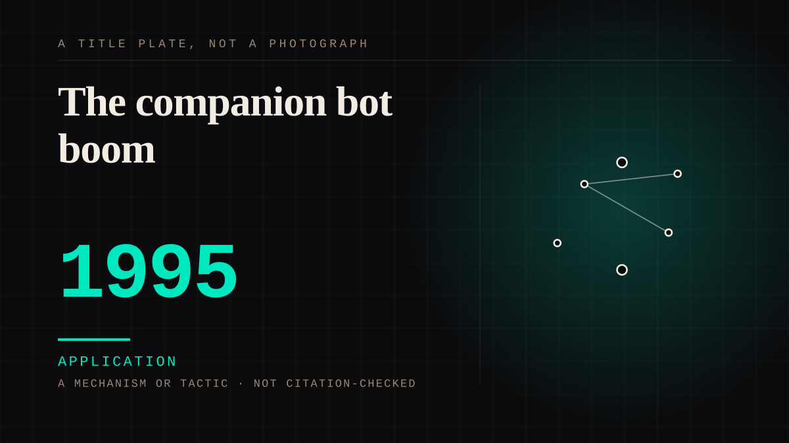

A mechanism or tactic · 1995 · First chatbots
The companion bot boom
Dozens of scripted personalities, rememberers, and subscription companions sold to a mass market in the mid-nineties.

The commercial attempt that came twenty-five years before it worked. The category has the same name, the same promise, and a very different population, and comparing the two eras is instructive about what the internet added.
Application. One-sided attachment put to work on purpose. Creator economies, community, fandom as infrastructure, and the things that genuinely help people. Not automatically good - a tool with an obvious use is a tool that will also get a bad one.
Where it sits
1950 1950-1999 · 1995 1999
Provenance · 1 source record(s)
- retrievableELIZA, 1966, and its programmer's founding complaint: that people insisted on believing the machine understood them when it did not - 'the user is the interpreter'. Every attachment since is a variation on the error ELISA's author found unbearably movingELIZA (Wikipedia); Weizenbaum, J. (1966). ELIZA - A computer program for the study of natural language communication between man and machine. ↗
COMPANION The companion chatbot
Connected · 3 out, 1 in
Reported as a story
It sits in